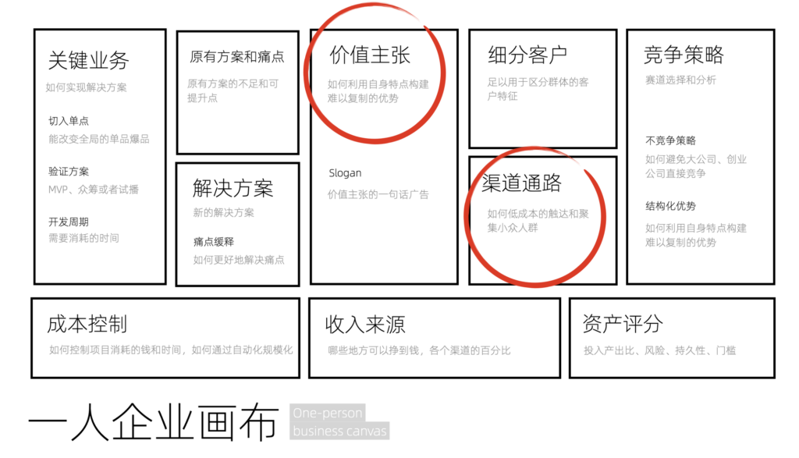
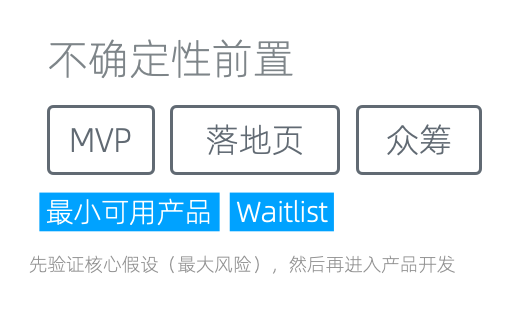
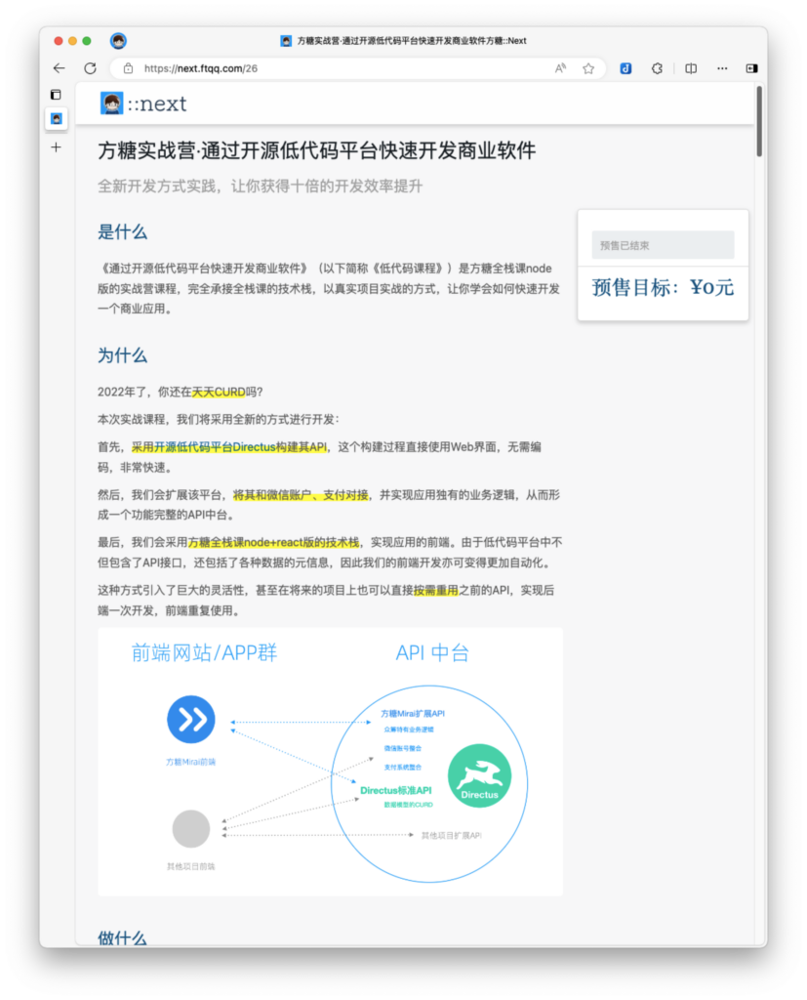
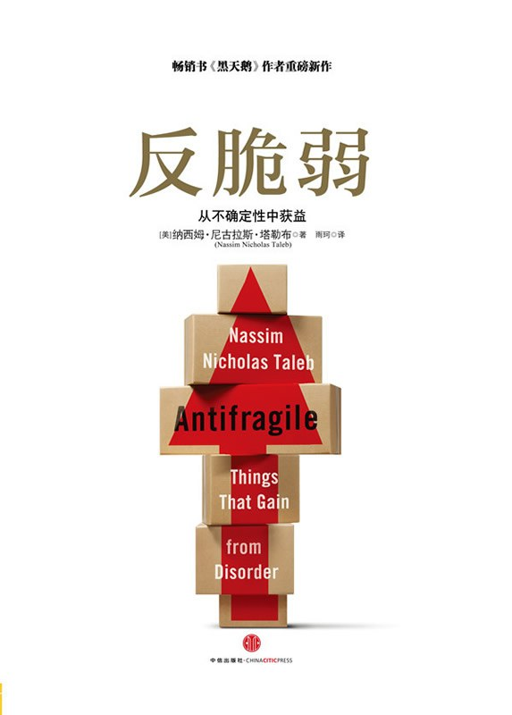
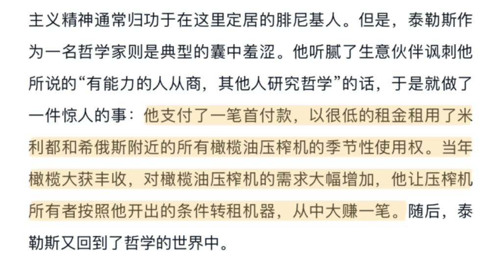
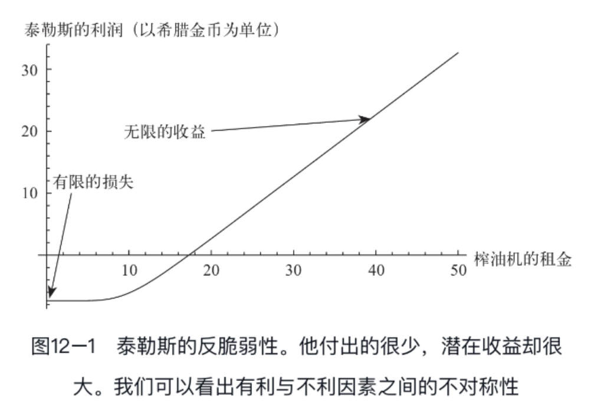
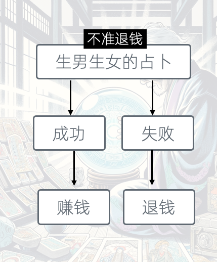
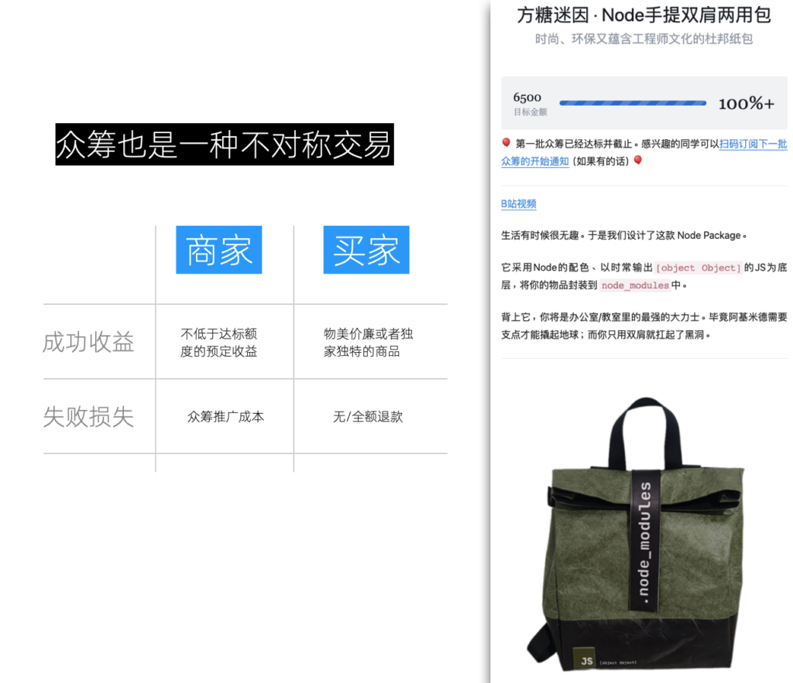
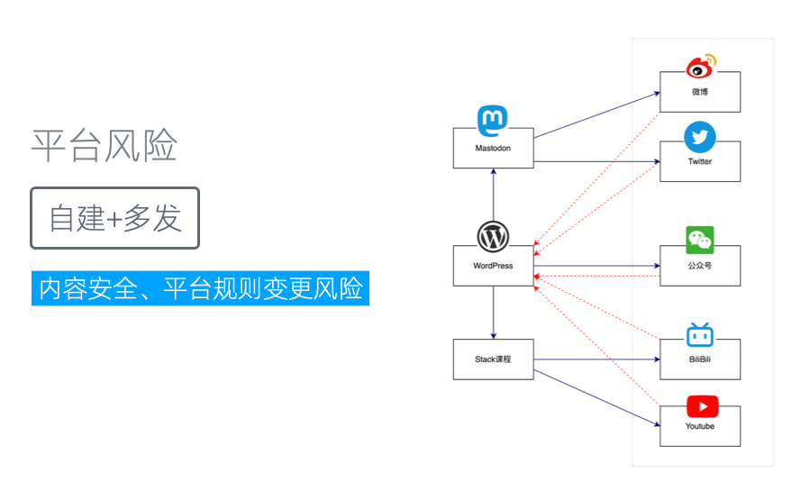

风险评控:管理和利用不确定性
风险的一大来源是不确定性，本文我们将对它进行专门的解析。
不确定性前置
应对不确定性最简单粗暴的方式是改变它出现的顺序，只是简单地将其前置就可以获得拔群的效果。因为如果我们能够在早期就识别出问题所在，那么我们后续的投入就可以避免。相反，如果这种不确定性在过程的末尾才显现，我们之前的所有投入可能都会白费，从而导致更大的损失。
这种对不确定性的前置处理，在行业中已经成为一种通用做法，也可以说是行业最佳实践。它主要通过最小可行产品（MVP）的方式实现，但也可以通过MVP的其他变体形式实现，比如落地页和众筹。MVP背后的思想是先验证核心假设，然后再进入产品开发阶段。

一人企业画布中的核心假设
让我们再来看看专栏之前讲过的《一人企业画布》。在规划时，我们填充到画布的所有内容都是假设。虽然这些假设在我们看来是合理的，并且逻辑上讲得通；但只有通过实际操作和事实检验后，我们才能知道它们是否正确。
因此，在填写完成画布后的一个重要环节，就是对每一部分的假设逐一进行验证。不过画布的各个模块之间也是有不同的权重的，最重要的两个模块是「价值主张」和「渠道通路」。
「价值主张」关注的是我们为细分客户提供的价值是否能够得到市场的认可，是否值得客户支付成本来获取。而「渠道通路」背后则是增长风险，关注的是我们如何到达目标人群，确保产品能够达到预期的市场影响力。
最理想的情况下，一个MVP，可以同时验证多个假设。但如果无法通过一个MVP验证所有假设，我们可以开发多个MVP，每个MVP验证特定的假设。

不确定性前置
由于MVP通常需要开发，依旧有较高的成本，因此存在一个更简易的版本，即落地页，它通过宣传视频或文字描述来介绍产品，并收集潜在用户的信息。Waitlist 也可以视为落地页的一种。
然而，落地页有一个局限，它只能验证用户的口头承诺。做过产品的读者都应该知道，用户说他会买和他真的会买之间，往往差着几十个百分点。因此，我们给落地页加上支付功能，进行产品预定和预售可以更真实地验证需求。
这种加上支付功能的落地页，和一种我们很熟悉的产品形态即为相似，那就是众筹。实际上，根据我们的实践，众筹可能是验证画布的最佳方式。因为它可以同时验证「价值主张」和「渠道通路」这两个模块。
众筹除了有着一个对产品进行详细描述的落地页，它还设置了一个「达标金额」，只有达到这个金额，产品才会进入开发阶段；否则将对用户全额退款。因此，除了可以通过用户的支付情况直接验证PMF（产品市场契合），还可以通过「达标金额」来验证我们的「渠道通路」和营销能力。
这里需要说明的是，「渠道通路」的验证本身就充满不确定性，同样的渠道，投入的市场费用不同、验证结果会不同；同样的市场费用，营销方案不同，验证结果还会不同。因此，采用众筹这种完全真实的方式进行验证，结果才更为可信。而且，众筹不但可以验证需求，还同步完成了订单（因为用户要预付款）；如果我们将达标金额设置为项目的开发成本，那么可以确保开发期间的最低收益。这在全职运营一人业务时，显得极为重要。

一个通过众筹排除的需求，节省了三个月到六个月时间
有读者可能会觉得，产品完成前的销量和产品完成后的销量是不同的，因此一些众筹不达标的产品，开发完成后的销量也可能超过原来的达标金额。这是有可能的，但比例通常不大。因为在产品的开发过程，我们增加的其实是开发能力而非营销能力，如果开发前没有能力完成达标营销，那么开发完成后绝大部分情况下依然没有能力完成营销。
有一种例外的情况是，在产品开发完成后，我们可以通过真实的产品体验或者产品内置的自营销功能来吸引新用户。但这些其实可以通过制作更好的MVP（视频、交互式Demo）来实现。
不对称交易
反脆弱性
反脆弱性是一个很值得深思的概念，它是由纳西姆-尼古拉斯-塔勒布（Nassim Nicholas Taleb）在同名书籍中提出概念。

《反脆弱》
这一概念与鲁棒性不同，鲁棒性是不受影响，而反脆弱性是能够从不确定性中获益。
书中提供的一个具体的例子之一是在生物学领域，人类感染某种病毒后可能会产生抗体。具有鲁棒性的个体不会感染病毒（不受影响），而很多个体在感染康复后拥有了抗体，甚至能对同系病毒都产生免疫，这种抗体还可以分给其他人 ------ 这就是反脆弱性的提现。
在《反脆弱》一书中，作者总结了一些获得反脆弱性的方法，例如通过迭代快速前进、冗余、去中心化、保留选择权、通过反馈进行及时调整，以及管理非线性效应和道德风险。
- 小步快跑 ：通过小规模的尝试和错误，个体和组织可以快速学习和适应环境变化，从而发现新的机会和解决方案。这种方法能够促进创新和进步，因为它允许在低风险的情况下探索未知领域。长期而言，这种持续的学习和适应能力使得个体和组织不仅能够生存下来，还能在动荡中发现成长的机会。
- 冗余 ：虽然冗余在短期内看起来是一种资源浪费，但在长期来看，它为个体和组织提供了更大的安全垫，使它们能够在面对突发事件或危机时快速恢复和调整。这种额外的缓冲区可以在关键时刻被用来抓住新的机会或进行战略性的调整，从而在不确定性中找到新的成长点。
- 去中心化 ：去中心化的结构增加了系统的灵活性和适应性，因为它允许多个部分独立响应外部变化。这种结构能够加速决策过程和创新，同时也能减少单一故障点带来的风险。在不确定性环境中，去中心化的系统更容易找到并利用新的机会，从而获得竞争优势。
- 保留选择权 ：通过选择那些提供未来灵活性和选择权的选项，个体和组织能够在不确定性中保持行动的自由度。这种策略允许它们在情况发生变化时快速调整方向，抓住新出现的机会，从而在长期内获得更好的结果。
- 通过反馈进行调整：持续的反馈循环使个体和组织能够实时了解其行动的效果，并据此进行调整。这种适应性不仅减少了失败的成本，还能够帮助快速利用新的信息和机会，从而在动态变化的环境中获得优势。
- 利用非线性效应：识别和利用非线性效应能够在某些情况下以较小的投入获得巨大的收益。通过理解和应用这种效应，个体和组织可以在不确定性中找到效率极高的增长途径，实现快速的发展和扩张。
- 道德风险的管理 ：通过适当管理风险，确保个体和组织不会因为过分依赖外部保护措施而变得鲁莽。这种策略促进了更为审慎和负责任的行为，从而减少了潜在的损失，同时也增加了在面对不确定性时做出正确决策的可能性。
特别是保留选择权和利用非线性效应这两个方法颇为有趣。我们鼓励大家阅读书中对应的章节。
不对称交易和期权
《反脆弱》中还有个很重要的概念：不对称交易。来自于书中一个故事：一位哲学家为了证明哲学家也可以用知识挣钱，于是他以非常低的价格预定了附近橄榄油压榨机的使用权。当橄榄季节来临，需求激增，而其他人无法租到压榨机时，他就能以高价转租这些机器，从而获得巨额利润。赚钱之后，这位哲学家又回到了哲学世界世界中。

哲学家预定榨油机的故事
这个故事不但有趣，其核心也展示了一种反脆弱性：通过构建一个不对称的交易模式来利用不确定性。可以参考下图：

有限的损失和「无限」的收益对比图
这种交易模式的特点是，如果未来发生不利变化，他的损失仅限于较低价格预订的压榨机费用，这是很低的。但如果情况有利，他将获得高额收益。这正是不对称交易的魅力所在，也展现了早期的期权思维。
构建不对称交易
在了解了背后的逻辑后，我们也可以自己来构建不对称交易。比如我们可以设计一个「生男生女的占卜」交易，规则是提前预付，如果结果不准那么退钱。

一个占卜生男生女的不对称交易
在这个交易中，投入和收益是不对等的：失败的话我们只是不挣钱，并没有任何损失；而成功的话，我们就能挣钱。所以这是一个只赚不赔的不对称交易。
这个封建迷信的例子当然不建议大家去实施，不过其实如果你仔细思考，会发现其实众筹也是完全类似的逻辑。只不过加上了一些额外规则。

众筹也是一种不对称交易
我们无法预知众筹项目能否成功达标。这种不确定性导致了两种可能的结果。针对这两种可能，众筹构建了一种特殊的、不对称的交易关系，既涉及商家也涉及买家。
在成功的情况下，商家可以获得至少达到预定额度的收益，而买家则有机会获得性价比高或独家的商品（众筹价格通常较为优惠，或者提供的商品在其他地方难以购得）。若众筹失败，买家并不会有实质性损失，因为他们可以获得全额退款。虽然这可能会对买家的心情造成影响------那种期待购买却未能如愿的感觉------但从财务角度看，买家是受到保护的。
对于商家而言，若众筹失败，他们主要的损失是推广众筹活动所产生的成本。为了吸引参与者，他们可能投入了不少流量推广的资源。然而，由于众筹未达标，商家尚未开始产品设计或开发阶段，这意味着更大的成本投入被避免了。
因此，众筹可以视为一种围绕不确定性构建的、对商家和买家都有潜在利益的不对称交易模式。这种模式允许双方在面对不确定性时，通过预设的机制来平衡风险与收益。
不对称交易的要件
我们尝试从以上的例子中提取不对称交易的要件：
- 一个存在不确定性的交易：这是不对称交易的前提，意味着交易结果不是完全可预知的
- 针对不同交易结果的差异化处理方案：确保两种交易结果下，有限的损失和高额的回报
- 力求实现交易双方的双赢：虽然不对称，但交易设计应当力求公平，使得所有参与方都能在某种程度上获益
根据以上要件，我们可以创造和改造自己的不对称交易。整个交易设计的重点在于，失败的情况下，我们能够将损失最小化。这往往和我们自身的资源、业务特性有关。比如，我们可以利用边际成本不对称来构建交易。我们已经创作完成的课程边际复制成本是很低的，所以可以提出这样一个交易：如果可以在一定时间内，学完我们的课程，那么课程就免费；否则则收取课程全款费用。
平台风险
除了我们前面提到的风险，还有来自平台本身的不确定性。这主要涉及内容安全问题，而每一个平台对内容安全的理解又并不相同。在实际操作中，许多账号即使没有违规，只要有大量用户认为某个操作违规，账号也极有可能被封禁。
此外，平台规则的变更也是一大风险点。在平台初期，为了扩展用户基础，很多规则都相对宽松。但是，当平台达到一定规模，尤其是形成垄断之后，规则就会变得更加严格，平台会更多地「唯利是图」。需要注意的是，平台对用户账号拥有极高的控制权，甚至在用户协议中明确指出，账号并不属于用户自己，而是平台的，有权随时收回。
自建+多发
为了规避这种风险，我们通常采取自建+多平台发布的策略。

自建+多发策略规避平台风险
比如，将长图文内容首先发布在WordPress上，然后将短内容发布在Mastodon上，视频则上传到自己的视频平台。这就是自建。自建的优点在于能够直接控制内容，但缺点是可能会面临用户基数较少的问题。
因此，我们还会采取第二步策略：多平台发布。将内容自建后，再分别发布到微博、推特、公众号以及Bilibili或YouTube等平台，以触及更广泛的受众。通过这种方式，我们可以引导流量全面回归到我们的主要平台上，从而在一定程度上控制品牌风险。即使某一天我们的某个账号被封，由于我们拥有自己的主站，我们仍然能够触达我们的用户，重建与用户的联系。
自建平台的成本问题
自建平台的一个挑战是成本问题。过去，自建平台的成本非常高，但现在，我们有了更简单的解决方案，即依赖开源项目来建设。更具体来说，可以大量依赖WordPress。现在，甚至有小程序可以直接对接WordPress的API接口，将WordPress网站转化为小程序。对于初创企业来说，在没有发展到一定规模之前，完全可以不考虑开发APP，因为小程序和弯针足以满足前期项目的需求。
此外，我们正在开发一款名为「方糖OPB」的WordPress插件，旨在为WordPress添加一些适用于个人企业的基础设施。通过安装这个插件并配置相应功能，可以轻松完成很多一人企业必须的基础功能，例如通过微信账号登录、微信支付以及使用WooCommerce进行众筹等。